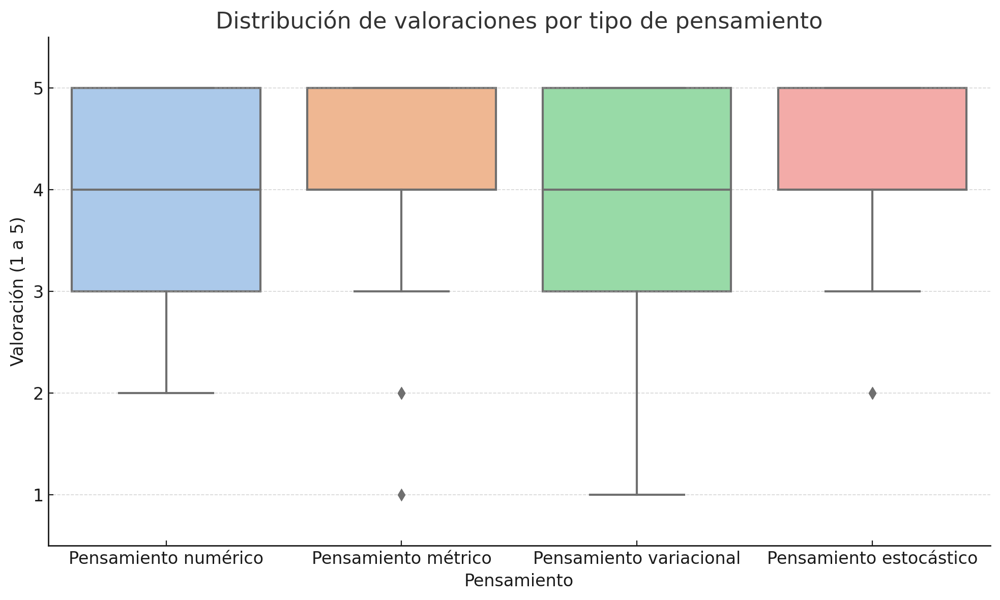
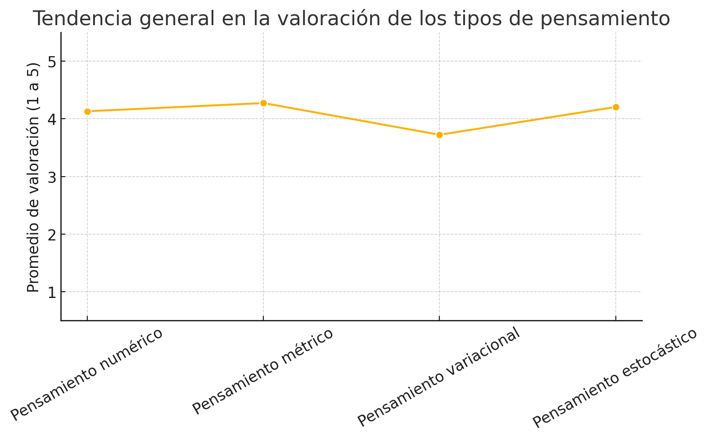
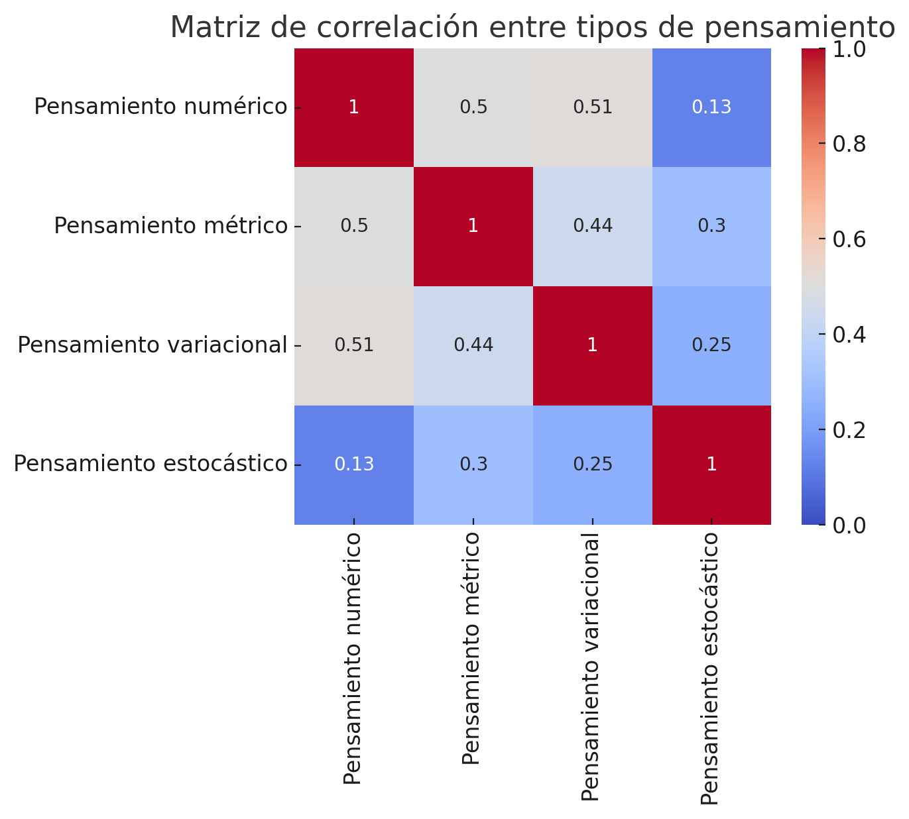
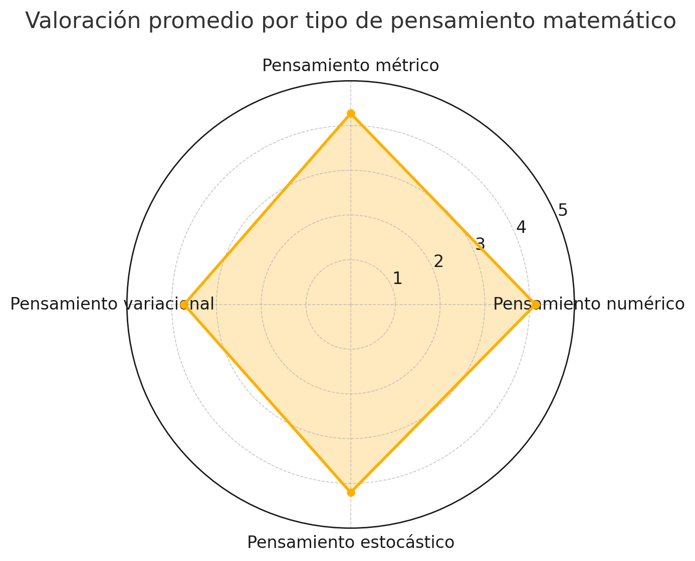

Pensamiento Matemático: Una Experiencia que Deja Huella
Comité de Seguimiento – Pensamiento Matemático
Universidad Icesi
Boletín de seguimiento académico · Universidad Icesi · Junio 2025
Comité de Seguimiento – Pensamiento Matemático
Universidad Icesi
Boletín de seguimiento académico · Universidad Icesi · Junio 2025
Este informe analiza la experiencia del curso Pensamiento Matemático como parte del Núcleo Común.
A través de encuestas, grupos focales y reflexiones docentes, se identifican emociones, aprendizajes y desafíos clave.
Se destaca una evolución positiva en la percepción del curso, especialmente por su enfoque práctico, colaborativo y contextualizado.
Los estudiantes valoran la conexión con el mundo real y la aplicabilidad de las matemáticas, aunque algunos expresan frustración por la carga cognitiva y la falta de conexión con sus disciplinas.
Los estudiantes valoraron positivamente los componentes numérico y métrico, mientras que el pensamiento variacional fue el más desafiante.
La tendencia de las valoraciones muestra un aumento en la satisfacción a lo largo del curso, con un pico en el componente métrico.
El pensamiento métrico y el variacional muestran alta correlación, mientras que el estocástico presenta independencia relativa.
El radar muestra una figura equilibrada con un descenso marcado en el pensamiento variacional.
